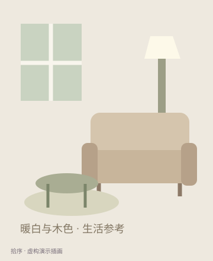
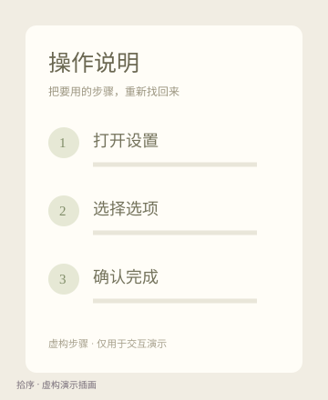

日常安排
↗出门前，找回预约或地址截图。
核对时间、地点与准备事项，需要时再看一眼。
临时要用的信息、生活灵感、需要留存的记录。
让存下的截图，有机会再次派上用场。
先看建议，由你确认。
再按自己的分类和记得的线索，找回那张图。


存下的片段，
留给下次需要。
保存的时候，是为了以后用。
需要的时候，却只记得一点点。
这组示例围绕日常安排、学习工作与生活参考展开：先按用途缩小范围，再通过画面和记得的线索确认目标。
核对时间、地点与准备事项，需要时再看一眼。
按主题和用途，找到笔记、流程与工作信息。
购物比较、居家灵感或日常搭配，接着参考。
以上为覆盖不同日常用途的虚构场景示例，不是固定分类要求；普遍需求与实际效果仍待验证。
每个人收藏的内容不同。
分类，也应该留给自己定义。
先检查，再归类。
找回和清理，各有清楚的入口。
图片先进入待确认。
此时也能从全部截图中查看。
检查图片、分类与线索。
不合适就改，不确定可稍后。
逐张确认，或选几张一起预览。
正式分类由这一步生效。
看清细节，再查看或分享。
用完后，另行决定是否清理。
示例建议由人工预设；自己的图片目前可手动归类。真实识别能力尚未接入。
用虚构示例走一遍流程，
也可以导入自己的图片。
取消不应用；稍后仍能找回。批量操作只影响明确选中的图片。
改名、合并与移除分类，都只调整标签。不会复制或删除原图。
分享后图片仍保留。清理有独立入口，需要用户明确确认。
后台持续扫描、无人值守删除、跨设备同步、复杂笔记编辑与付费系统。